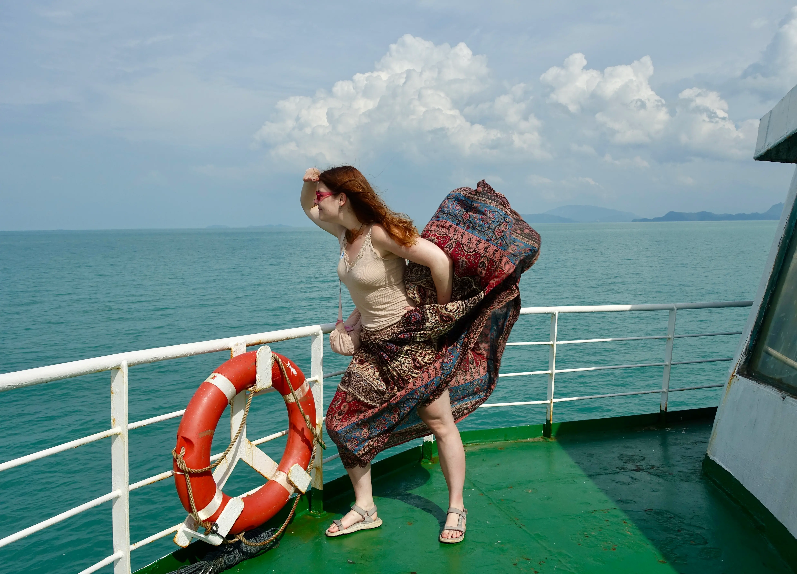
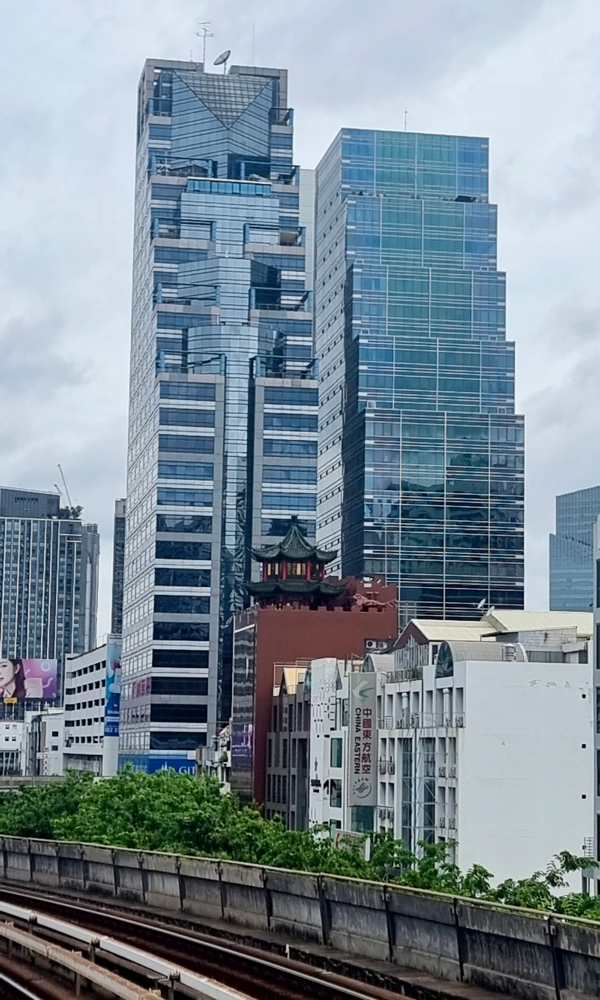
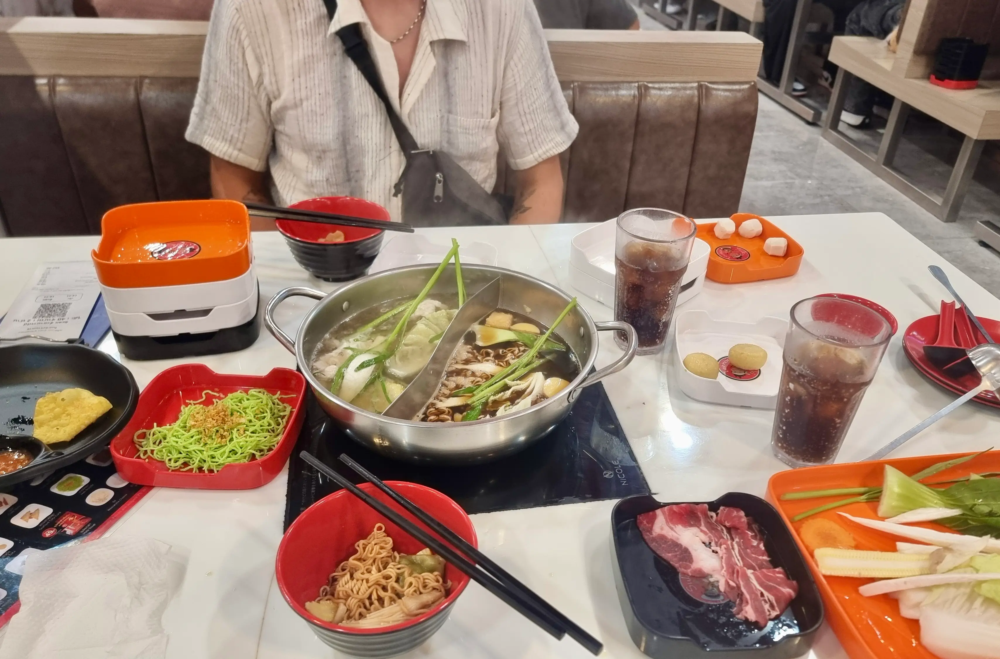
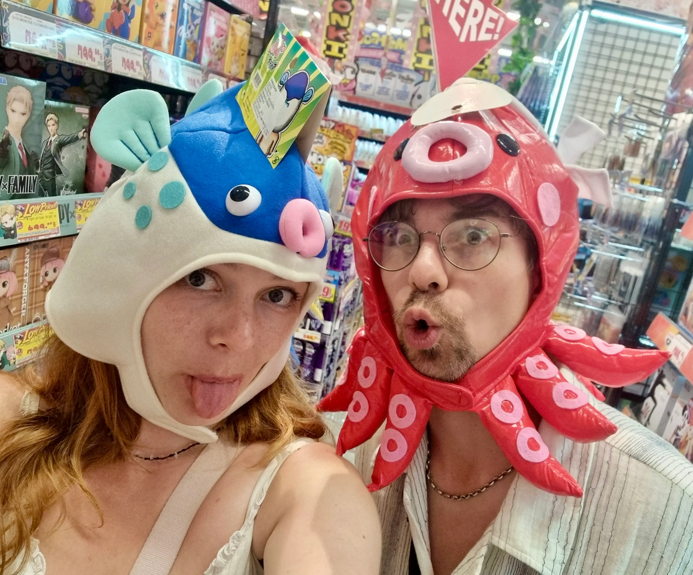
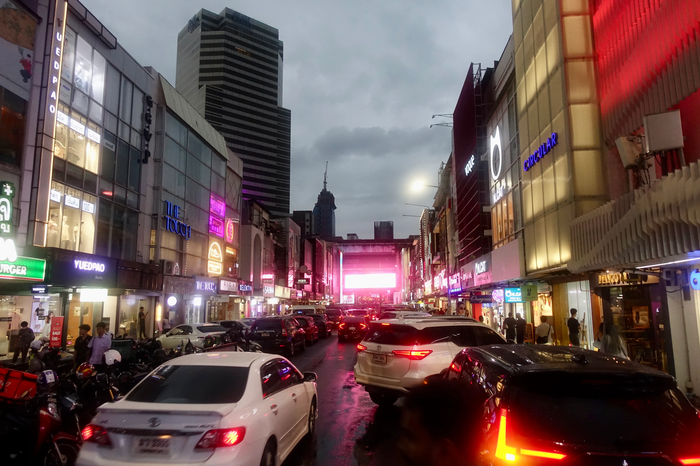
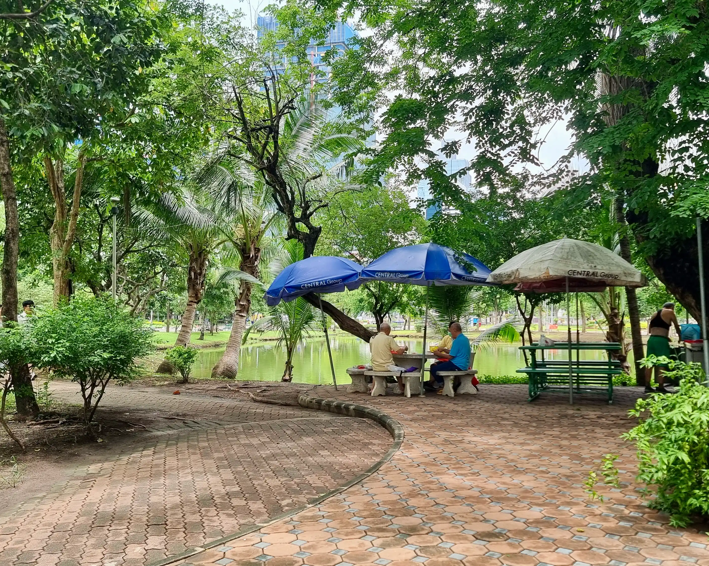
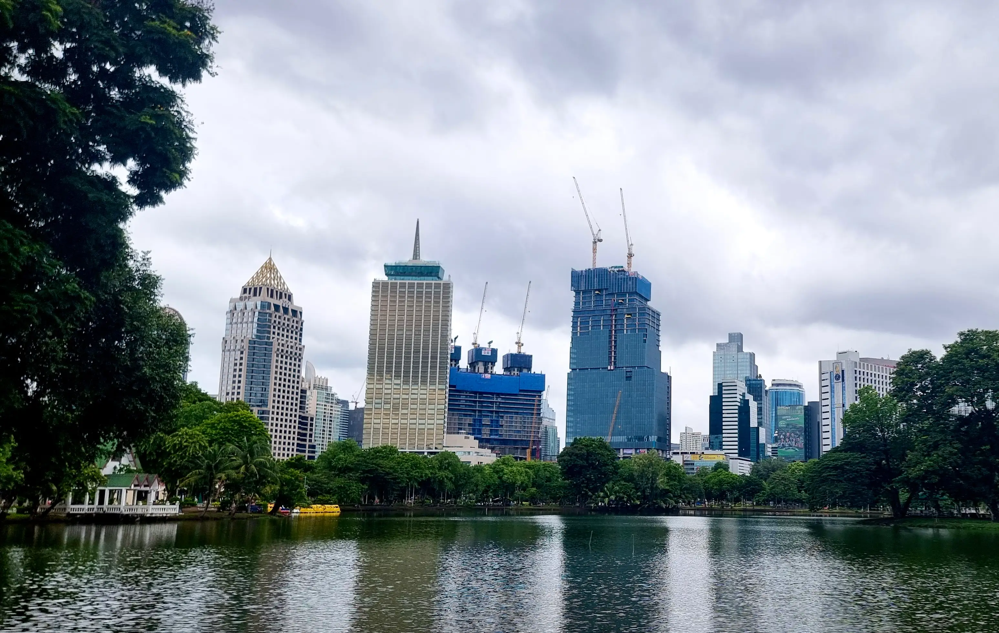
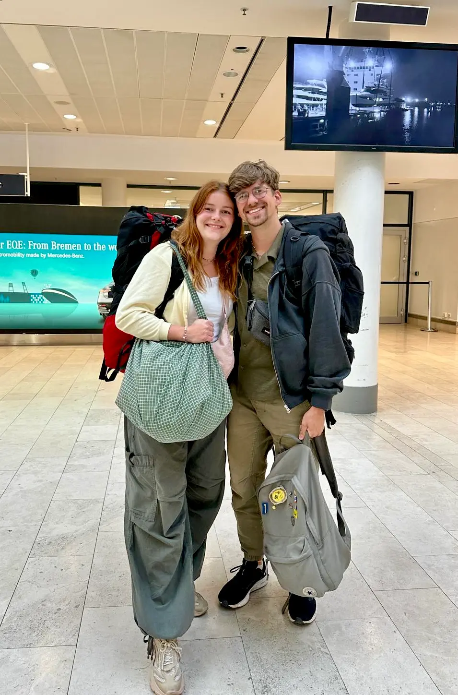

Die Fahrt nach Bangkok ist lange und anstrengend. Wir fahren morgens mit dem Roller, unseren beiden großen Rucksäcken und dem jeweiligen Handgepäck durch Phangan. Unser Roller geht in die Knie, hat aber zum Glück keinen Platten und wir schaffen es mit dickem Zeitpuffer in den Ort.
Als Julius den Roller zurückgibt, trage ich mit beiden großen Rucksäcken zum Anleger und fühle mich wie eine olympische Gewichtheberin. Zum Frühstück gibt es den Haferbrei, den ich für Julius' schlechten Magen gekauft hatte, und dann geht es auch schon los.
Dieses Mal fahren wir mit einem Katamaran, nicht mit einer gewöhnlichen Fähre. Im Passagierraum merkt man davon nichts, aber als wir einmal auf das Außendeck gehen, sieht man das Wasser in zwei kräftigen Strahlen hinter dem Katamaran wegziehen. Der Wind zerrt an meinen Haaren und wir gehen schnell wieder nach drinnen, bevor einer von uns wegfliegt.
Auf dem Festland angekommen werden wir von einem übervollen Pier begrüßt und einem Ladyboy, der im Alleingang tausend Reisende in sechs unterschiedlichen Bussen organisiert. Mit bunten Dreiecken beklebt werden wir den entsprechenden Bussen nach Bangkok zugeteilt.
"Dark blue, not sky blue! I repeat! This is the dark blue bus naa!"
Dann: acht Stunden sitzen als Übung für den Flug übermorgen. Dass wir nur noch zwei Tage in Bangkok haben werden, frustriert mich ungemein und als es dunkler draußen wird und die Straßenstände, Autos, Dörfer und Essensstände an uns vorbeiziehen, nehme ich meinen ersten kleinen Abschied. Die letzte Reise in Thailand.
Das Hostel bekommt in meiner Bewertung einen von zehn Punkten. Es ist winzig, es gibt nicht einen Schrank oder auch nur eine Ablagefläche und das Bett ist eine Matratze auf dem Boden. Wir wühlen uns durch unsere ausgekippten Rucksäcke ins Bett und schlafen unruhig.
Der Morgen bleibt unruhig, denn scheinbar schlafen nicht nur Bangkoks Straßen nachts nicht, sondern auch die Ameisen. Eine kleine Ameisenstraße hat sich nämlich über Nacht vom Fenster am Kopfende einen Weg zu unserem Müll gebahnt. Über Julius' Kopfkissen.
Wir beseitigen die Straßenarbeiterinnen, die wir sehen, und machen uns auf für einen letzten Tag.
Bei jedem Weg durch die Wolkenkratzer werde ich nostalgisch. Und natürlich auch, als wir ein letztes Mal bei unserem Anker in all dem Trubel landen: Na, wo wohl? Beim MBK! Ich weiß, ich weiß. Aber ein bisschen Vertrautheit ist eben nett.
Tatsächlich gehen wir aber dieses Mal in ihre hübschere, elegantere Schwester, den Siam Square. Denn jetzt muss ich ja nicht mehr bei jedem Teil denken Das muss ich die nächsten Wochen schleppen. Also wird geshoppt.

Ich finde neue Schuhe, zwei Handtaschen, Souvenirs und – da ich diesen Blog erst veröffentliche, nachdem ich es ihm gegeben habe - einen wunderschönen Verlobungsring für Julius. Er ist natürlich nicht so edel wie mein eigener, aber silbern und mit hellen Baguette-Steinchen, die zu den Diamanten in meinem passen.
Ein sturzbachartiger Monsun verhindert, dass wir den Siam Square verlassen künnen, und so suchen wir uns hier etwas zum Essen. Das ist zwar nicht, was wir geplant hatten, aber wir machen das Beste daraus. wir finden ein Hot-Pot-Restaurant in der Mall, für das wir lange anstehen müssen. Schließlich bekommen wir einen großen Topf mitten auf dem Tisch auf einer Heizplatte, in dem wir die Beilagen, die extra bestellt werden, garen können.
Die reichen von Pilzen über Tofu bis hin zu Fleisch und nach den reichlichen Portionen lehnen wir uns vollgegessen zurück.

Die Ruhe nach dem Essen hält nicht lange, denn auf dem Rückweg kommen wir an einem thailändischen Ableger einer japanischen Ladenkette vorbei, in der es alles gibt. Don Quijote.
Und wenn ich sage, es gibt alles, dann meine ich alles. Essen, Kosmetik, Sexspielzeug, Schlüsselanhänger, Mitbringsel, medizinische Produkte. Alles blinkt, alles wird lautstark über Lautsprecher beworben und im Hintergrund tönt unentwegt der Jingle der Ladenkette, der sich direkt in meine Hirnhaut brennt.

Es kommt mir vor, als würden wir ewig darin bleiben, weil wir so viele skurrile Dinge sehen und ziemlich viel Spaß haben.
Genug Zeit war es aber doch, da der Regen wieder eingesetzt hat. Wir schlendern unter den Hochstraßen zum Hostel zurück.
Durch die Witterung wird aus unserem Plan für den letzten Abend leider auch nichts. Egal wie toll eine Rooftop-Bar noch wäre, sie könnte nichts gegen die dicken Wolken machen, die uns jegliche Sicht rauben würden.
Der Weg erweist sich als schwierig, weil eine Kreuzung absolut überflutet ist. Ein Angestellter eines Restaurants fährt Gäste mit seinem Roller durch die hohen Fluten zum Eingang oder zur nächsten Straßenseite, aber das ist leider nicht die Seite, die wir brauchen, also irren wir ohne Google Maps auf Umwegen zurück.
Damit unser letzter Abend in Thailand nicht komplett ins Wasser fällt, nehmen wir uns kurzerhand ein Taxi zu einer Barmeile, die bei Touristen wohl sehr beliebt ist.
Auf Google Maps sieht es aus wie ein Katzensprung, weil es dicht am Kaiserpalast ist, in Realität ist es aber eine halbe Stunde mit dem Auto entfernt.
Beim Aussteigen aus dem Taxi werden wir direkt von Verkäufern belagert, die uns einen Regenschirm verkaufen wollen, und da Julius tatsächlich keinen dabei hat, sind wir gefundenes Fressen für sie.
Schnell stellen wir fest, dass die Bars aber nicht sehr nach unserem Geschmack sind. Oder wir nicht in der Stimmung zum Feiern sind.
Es sind noch kaum Gäste da und die Anwerber für die Clubs überbieten sich nur begrenzt in ihrer Lautstärke. Diverse Musikgenres schallen auf die Straße und ergeben ein buntes Dröhnen.
Letztendlich setzen wir uns in einer der leiseren Bars hin und trinken unseren letzten thailändischen Cocktail.
Wir lassen die letzten vier Wochen Revue passieren.
"Was hat dir am besten gefallen? Was wirst du zuhause vermissen? Wo würdest du noch mal hin zurückfahren wollen?"
Obwohl es noch gar nicht soo spät ist, wir aber trotzdem keine Lust mehr auf Trubel haben, entscheiden wir uns, zurückzulaufen.

Der Weg ist lang, doch wir laufen durch viele kleine Straßen und komplett unterschiedliche Viertel. In manchen sind winzige, rappelvolle Bars für echte Bangkoker, an manchen Straßen sitzen knapp bekleidete Frauen auf kleinen Klappstühlen und unterhalten sich, während sie auf Kundschaft warten.
Wir sehen viele gemütliche Katzen und teilen uns unsere letzte Menthol-Zigarette. Als Nachtisch gibt es ein 7/11-Toast.
Wir packen und lassen unsere Rucksäcke im Hostel zurück. Der Flug geht erst abends, doch der Tag ist von einer inneren Unruhe geprägt.
Da wir die nächsten zwanzig Stunden wieder in Innenräumen zubringen werden, besuchen wir Bangkoks Stadtpark.

Es gibt einen großen Teich in der Mitte und Laufwege, die drum herum führen. Man könnte Tretboot fahren oder wie die alten Männer Mahjong in einem kleinen Pavillon spielen.
Oder man könnte sich auf eine Parkbank setzen und mit ansehen, wie sich ein riesiges Ungetier aus dem ach so friedlichen Teich emporhebt und mit zitternder Zunge auf seinen vier mit Klauen besetzten Beinen mir nichts, dir nichts über den Rasen kriecht. Mitten in der Metropole Bangkok.
Eben doch noch eine tropische Stadt, in der sich nicht nur Menschen, sondern auch Warane wohlfühlen.
Wir machen ein Mini-Picknick und werden von den friedlichen Riesen-Echsen in Ruhe gelassen.

Schließlich werden wir aber doch zu unruhig, holen uns noch einen Thai Tea und treten den Rückweg an.
Mit unseren gefühlt 30 kg schweren Rucksäcken machen wir uns ein letztes Mal auf den Weg zur Metro. Da ich noch Bargeld habe, kaufe ich mir an einem Straßenstand noch einmal Mango Sticky Rice.
Wir laufen an einer Festlichkeit für ein Mitglied des thailändischen Königshauses vorbei und schaffen es dann irgendwie, uns in die Bahn zu quetschen. Mehr und mehr Leute steigen aus, bis nur noch andere Reisende mit ähnlichem Gepäck im Waggon sitzen.
Wir werden im internationalen Flughafen ausgespuckt.
Julius wartet, während ich mich aus meinen Thailand-Klamotten herausschäle und meine Langstreckenflug-Klamotten anziehe.
Während er sich umzieht, esse ich meine Hälfte vom Mango Sticky Rice und könnte fast weinen. Auch wenn es vier Wochen waren, will ich nicht zurück.
Ich will nicht, dass diese wundervolle Zeit vorbei ist. Ich habe so viele Dinge erlebt und gesehen, so viele wunderschöne Erinnerungen mit meiner großen Liebe geschaffen.
Wir sind verlobt.
Wir hatten den Luxus, einen ganzen Monat weg von jeglichem Alltag und Verantwortung in den Tag hinein zu leben.
Julius kommt wieder und wir packen all unser Hab und Gut ein. Ein letzter Blick und dann geht es durch die Schranken, zurück in eine andere Welt.
Da ich diese Zeilen etwas später schreibe, in unseren eigenen vier Wänden, weit, weit weg von Thailand, kann ich sagen, dass diese Reise etwas Besonderes war.
Ich würde nicht so weit gehen zu sagen, dass sie lebensverändernd war. Aber sie ist etwas, an das ich noch immer häufig zurückdenke.
Ich träume davon, zurückzukehren, zu dieser magischen Zeit.
Auf Wiedersehen, Thailand.
Auf dass es nicht das letzte Mal war, dass wir uns begegnet sind!
